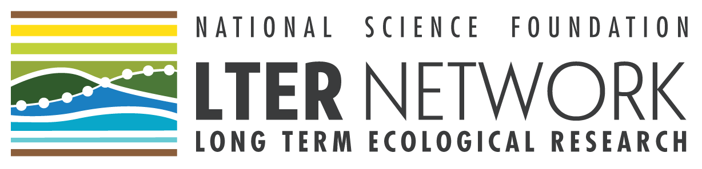
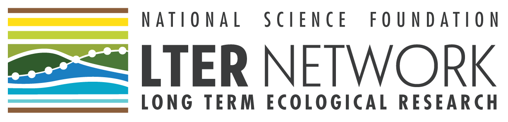

This document is an adaptation of the SOM Harmonization working group and NutNet policies.
Data are public, and harmonizing them into something meaningful is hard
Metagenomic data collected as part of NSF funded networks and observatories (e.g. LTER, CZO, and NEON) are intended to be publically available. Much of this legacy data, however, has been collected and archived in ways that preclude meaningful cross site synthesis without further processing. The major objective of this working group, is to collate and harmonize these datasets in a scripted, tractable manner. Many of the raw datasets collected for the database have already been published and archived in GenBank, IMG or other data repositories. In some cases, data from unpublished sources have been included in the database (with permission of the data generators). For both published and unpublished data, personal knowledge about the individual sites and experiments are critical for accurately understanding the data products and linking across datasets. The willingness of many scientists to cooperate and collaborate is what makes this synthesis possible. We have attempted to lay out ground rules to establish a fair process for establishing authorship, and to be inclusive while not diluting the value of authorship on a manuscript.
Our primary goals in the authorship process are to consistently, accurately and transparently attribute the contribution of each author on the paper, to encourage participation in manuscripts by interested scientists, and to ensure that each author has made sufficient contribution to the paper to warrant authorship. Towards this end we have developed authorship guidelines for both the initial database paper and subsequent scientific papers that use the database. Please note, physical attendance at any of our meeting is not a requirement.
Papers using the EMERGENT database and other resources with put together to address scientific questions should follow the authorship policy. Separate authorship for the methods and database documentation paper are described below.
Authorship process: Overview
1. Read these authorship policies and guidelines.
2. Consult the Emergent web site on for current proposals and active manuscripts, and contact the listed lead author on any similar proposal to minimize overlap, or to join forces.
3. Prepare a manuscript proposal, and email Jeff Blanchard (jeffb [at] bio.umass.edu). Your proposal will list the lead author(s), the title and abstract body, and the specific data types or fields from the database that you wish to use. You can also specify more detail about response and predictor variables (if appropriate), and indicate a timeline for analysis and writing. Proposed ideas are reviewed by the authorship committee (Stanish, O’Brien, Rodriques, Jansson, McDermott, Blanchard) to ensure there is sufficient distinction from proposed and ongoing papers. The authorship committee may suggest altering or combining analyses and papers to resolve issues of overlap. Following approval, the abstract will be posted to the projects tab of the website to communicate with the larger working group.
4. Circulate your draft analysis and manuscript to solicit Opt-In authorship. The lead author should circulate the manuscript to the working group by attaching it as an email to the synthesis listserv (emergent [at] lternet.edu). The subject line of the email should include the phrase “OPT-IN PAPER.” This email should also include a deadline by which time co-authors should respond. The right point to share your working draft and solicit co-authors is different for each manuscript, but in general: * Sharing early drafts or figures allows for more effective co-author contribution. While ideally this would mean circulating the manuscript at a very early stage for opt-in to the entire network, it is acceptable and even typical to share early drafts or figures among a smaller group of ‘core authors.’ * Circulating essentially complete manuscripts does not allow the opportunity for meaningful contribution from co-authors, and is discouraged.
5. Potential co-authors should signal their intention to opt-in by responding by email to the lead author before the stated deadline.
6. Lead authors should keep an email list of co-authors and communicate regularly about progress including sharing drafts of analyses, figures, and text as often as is productive and practical.
7. Lead authors should circulate complete drafts among co-authors and consider comments and changes. Given the wide variety of ideas and suggestions provided on each paper, co-authors should recognize the final decisions belong to the lead author.
8. Final manuscripts should be reviewed and approved by each co-author before submission.
9. All authors and co-authors should fill out their contribution in the authorship rubric and attach it as supplementary material to manuscripts using the database. Lead authors are responsible for ensuring consistency in credit given for contributions, and may alter co-author’s entries in the table to do so. An easy way to manage the author table is with an online google sheet.
10. The lead author should carefully review the authorship contribution table to ensure that all authors have contributed at a level that warrants authorship and that contributions are consistently attributed among authors. Has each author made contributions in at least two areas in the authorship rubric? Did each author provide thoughtful, detailed feedback on the manuscript? Authors are encouraged to contact the workshop coordinators (Stanish, O’Brien, Rodriques, Jansson, McDermott, Blanchard) about any confusion or conflicts.
Authorship for papers using the database
Following publication of the database, which we see as a public resource available through EDI and NCEAS, we hope numerous scientific questions can be addressed with this database and encourage the broader community to use this as a resource moving forward. Studies that use multi-site data from the EMERGENT database are really leveraging the synthesis activities of the working group. Towards this end, we’re suggesting an opt-in approach where for the first two years following publication of the database paper.
Who should opt in?
Authorship must be earned through a substantial contribution. Traditionally, project initiation and framing, data analysis and interpretation, and manuscript preparation are all authorship-worthy contributions, and remain so for manuscripts using our database. However, synthesis collaborators have also agreed that collaborators who lead a site from which data are being used in a paper can also opt-in as co-authors, under the following conditions: (1) the collaborators’ contributed to the generation of L2 data that form the basis for the database and are used in the paper’s analysis; and (2) that this collaborator makes additional contributions to the particular manuscript, including data analysis, writing, or editing.
Manuscripts published using this synthesis will be accompanied by a supplemental table indicating authorship contributions. You can create and share a standard authorship table using google docs and the cirteral listed above. For opt-in papers, a co-author is expected to have at least two of the following areas checked in the rubric below.
Authorship rubric, for papers using the database
- Developed and framed the research question.
- Analyzed data or contributed to data analyses.
- Conducted model simulation or contributed to model simulations.
- Helped to harmonize and aggregate the raw data to cross-site dataset (Level 1 data).
- Developed and contributed tools to synthesize and analyze the aggregated (Level 2 data).
- Wrote the majority of at least one of the sections of the paper.
- Contributed to writing the paper by providing suggestions, text, citations, copy editing.
Authorship rubric, for the database paper
Invitations for authorship on the ‘database paper’ that documents the process and product of these efforts, will be extended to anyone who can complete two of the following criteria:
- Contributed raw data (Level 0 data).
- Helped to harmonize and aggregate the raw data to cross-site dataset (Level 1 data).
- Developed and contributed tools to synthesize and analyze the aggregated (Level 2 data).
- Wrote the majority of at least one of the sections of the paper.
- Contributed to writing the paper by providing suggestions, text, citations, copy editing.
- Site coordinator, responsible for coordinated data collection, QA-QC, and submission of data products used in the database.
 
